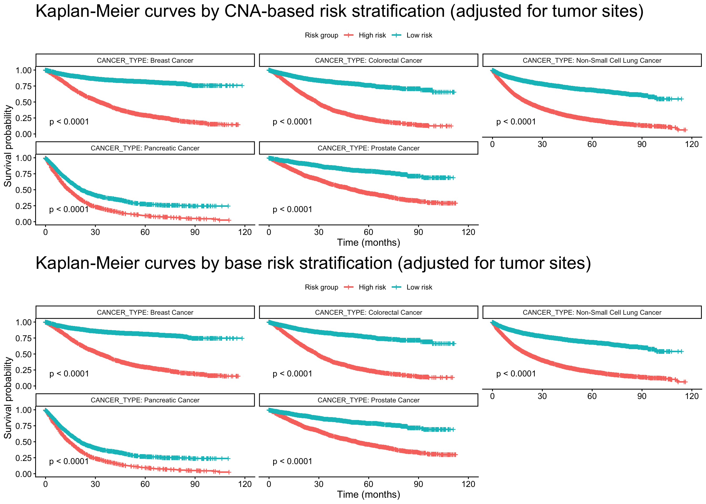
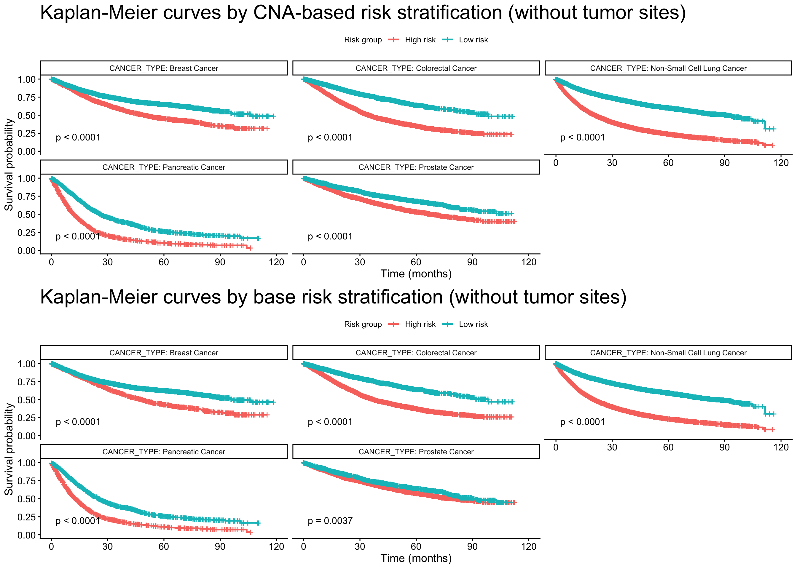
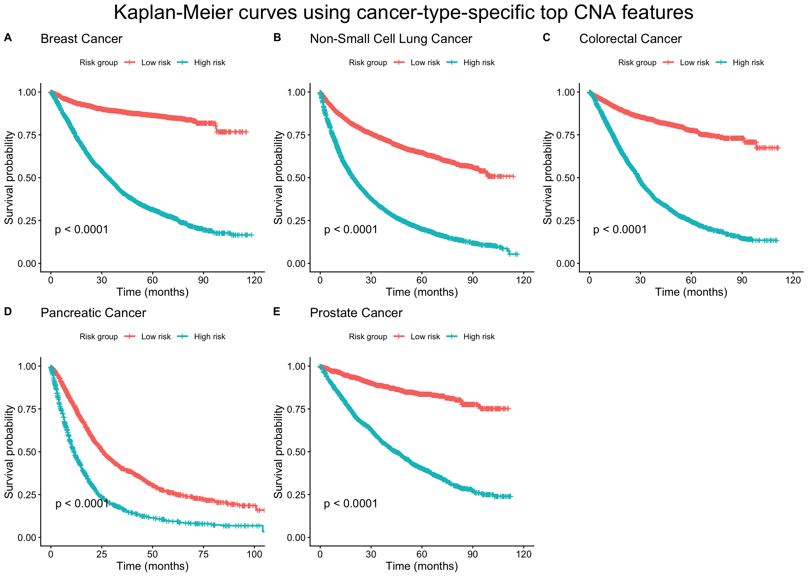
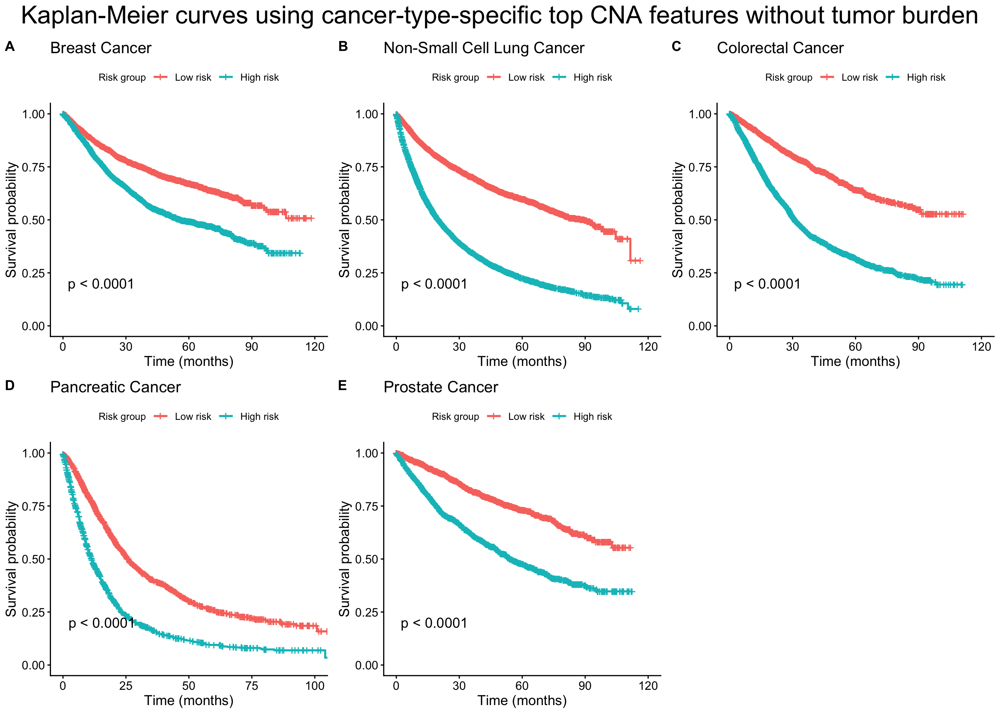

| Model | df | C_index | SE | AIC | Delta_AIC | BIC | Delta_BIC |
|---|---|---|---|---|---|---|---|
| Base | 4 | 0.676 | 0.0027 | 174913.3 | 0.0 | 174942.6 | 0.0 |
| Treatment | 9 | 0.684 | 0.0027 | 174336.7 | 576.6 | 174402.7 | 539.9 |
| CNA | 19 | 0.689 | 0.0027 | 174137.9 | 775.4 | 174277.2 | 665.4 |
Project 2
Reproducibility
This analysis requires the following R packages: data.table, dplyr, survival, survminer, cowplot.
If needed, install them via: install.packages(c(“dplyr”, “data.table”, “survival”, “survminer”, “cowplot”))
| Group | N | Observed | Expected | OE2_E |
|---|---|---|---|---|
| risk_group_gene_sites=High risk | 12459 | 8322 | 5011 | 2188 |
| risk_group_gene_sites=Low risk | 12488 | 2972 | 6283 | 1745 |
| Group | N | Observed | Expected | OE2_E |
|---|---|---|---|---|
| risk_group_base_sites=High risk | 12448 | 8257 | 5056 | 2027 |
| risk_group_base_sites=Low risk | 12499 | 3037 | 6238 | 1643 |




R version 4.5.1 (2025-06-13)
Platform: aarch64-apple-darwin20
Running under: macOS Sequoia 15.6
Matrix products: default
BLAS: /Library/Frameworks/R.framework/Versions/4.5-arm64/Resources/lib/libRblas.0.dylib
LAPACK: /Library/Frameworks/R.framework/Versions/4.5-arm64/Resources/lib/libRlapack.dylib; LAPACK version 3.12.1
locale:
[1] en_US.UTF-8/en_US.UTF-8/en_US.UTF-8/C/en_US.UTF-8/en_US.UTF-8
time zone: America/Detroit
tzcode source: internal
attached base packages:
[1] stats graphics grDevices utils datasets methods base
other attached packages:
[1] cowplot_1.2.0 survminer_0.5.2 ggpubr_0.6.3 ggplot2_4.0.1
[5] survival_3.8-3 dplyr_1.1.4 data.table_1.17.8
loaded via a namespace (and not attached):
[1] generics_0.1.4 tidyr_1.3.1 rstatix_0.7.3 xml2_1.4.1
[5] lattice_0.22-7 digest_0.6.37 magrittr_2.0.4 evaluate_1.0.5
[9] grid_4.5.1 RColorBrewer_1.1-3 fastmap_1.2.0 jsonlite_2.0.0
[13] Matrix_1.7-3 backports_1.5.0 Formula_1.2-5 ggtext_0.1.2
[17] gridExtra_2.3 purrr_1.2.0 scales_1.4.0 textshaping_1.0.4
[21] abind_1.4-8 cli_3.6.5 rlang_1.1.6 splines_4.5.1
[25] withr_3.0.2 yaml_2.3.10 tools_4.5.1 ggsignif_0.6.4
[29] broom_1.0.10 vctrs_0.6.5 R6_2.6.1 lifecycle_1.0.4
[33] car_3.1-5 htmlwidgets_1.6.4 ragg_1.5.0 pkgconfig_2.0.3
[37] pillar_1.11.1 gtable_0.3.6 glue_1.8.0 Rcpp_1.1.0
[41] systemfonts_1.3.1 xfun_0.57 tibble_3.3.0 tidyselect_1.2.1
[45] rstudioapi_0.17.1 knitr_1.50 farver_2.1.2 htmltools_0.5.8.1
[49] rmarkdown_2.29 carData_3.0-6 labeling_0.4.3 compiler_4.5.1
[53] S7_0.2.1 gridtext_0.1.6